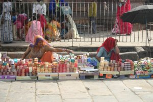
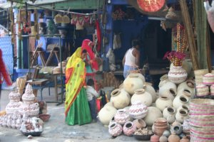

Le 11 décembre 2004,
 Nous partons deambuler dans le labyrinthe de ruelles bleutes de Jodhpur. Tout est clame, paisible... Les gens nous regardent curieusement, rien de plus. Malheureusement, ce fut de courte duree ! Arrives a la place centrale de la ville, c’est l’affluence... Des rickshaws arrivent de partout, des chameaux et des chevaux tirant des carrioles nous bousculent au passage, les velos et les pietons se pressent au milieu de la route, un debut d’angoisse commence a m’etreindre. Plusieurs fois, je me retrouve bousculee par des velos dont un qui me roule carrement sur le pied...
 Essayant de fuir ce brouhaha, nous demandons notre route a un passant et, en moins de 5 secondes, une vingtaine de badauds nous encerclent et nous parlent tous en meme temps. Je m’eloigne rapidement de ce groupe, completement oppressee par cette masse de gens qui se pressent autour de nous. Nous prenons une route au hasard, juste pour fuir ces gens et c’est au tour des mendiants de nous alpaguer. Femmes, enfants, nous avons le droit a tout. Je commence a ne pas me sentir tres bien a cause de cette sollicitation incessante. Je m’assois quelques instants afin de reprendre mes esprits et nous sommes presque aussitot harceles par des enfants qui nous tirent le sac a dos ou nous pincent. La, je craque... Nous sautons dans le premier rickshaw venu pour qu’il nous emmene loin de cette foule, dans le jardin public, afin de trouver un peu de tranquilite. C’est peine perdu... A peine assis depuis moins de 5 minutes, un paquet de cacahuetes a la main, femmes et enfants se jettent sur nous pour demander a manger. La, trop c’est trop... Je leur hurle dessus en leur jetant les cacahuetes a la figure ! Ca a au moins le merite de les faire partir... Ce n’est pas trop tot !
Nous restons quelques temps dans le jardin, a moitie caches derriere un arbuste pour qu’on nous laisse tranquille. Les gens passent, nous regardent fixement pendant de longues minutes ou nous montrent du doigt, mais repartent sans venir nous importuner. Nous avons vraiment l’impession d’etre des animaux de foire ! Je ne comprends pas leur facon de toiser du regard les etrangers de cette facon, et surtout les femmes blanches ! Jamais ils ne se permettraient de regarder de cette facon une femme indienne, ce serait lui manquer de respect...
Apparemment, depuis l’arrivee des films americains en Inde, ils ont tendance a croire que les femmes blanches sont toutes des femmes faciles. En effet, les films indiens sont tres softs... Meme dans les histoires d’amour, les amants ne s’embrassent jamais, c’est a peine s’ils se prennent la main. Evidemment, en comparaison, les films americains peuvent choquer !
Bref, nous rentrons a l’hotel, fatigues par cette dure journee... Il y a un vrai decalage entre notre culture et la leur, ce n’est pas toujours facile a gerer. Je me change les idees devant une bonne biere indienne ce qui me permet de tout relativiser !
Eve-Laure
{kind=link}
{kind=link}